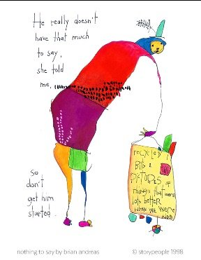

--UG. Krishnamurti
“Get two spiritual leaders in a room and you’ll never see so much smoke being blown up each other’s asses. That’s how they levitate.” –Aaron Joy
The flattering stranger writes and asks me a spiritual-type question. It’s a question about consciousness, awareness, truth, and of course how to get some of that for himself.
Y’know, the usual.
He’s looking for understanding, freedom, guidance. He wants to “get it.” He’s looking to be shown the way. He’s looking for magic in an email.
From me.
Aw mister, don’t you know I have been disappointing people all my life?
I mean just ask my mother who, though dead, will no doubt drop down from the heavens just to let you know to about my lack of brag-worthy achievements, lack of adequate bank account, lack of necessary beauty, lack of proper personality.
But ok fine, here is this man turning to me as if I can give him something. And though I truly suck at being what people want me to be,
I’m nothing if not polite (cough),
So I do my best to reply. I send a short couple of sentences, consisting mostly of questions turned back to the asker, hoping to intrigue him to ponder.
There! My best attempt at giving him what he wants. He’s probably not going to recognize it.
And sure enough, 2 weeks later there’s the same guy with the same question, this time on social media asking someone far sager than I. Someone who, after replying with a somewhat repetitious 15 or 20 lonnngg paragraphs added to my couple of sentences, provides all the answer –and then some- that any inquirer could possibly ask for.
Surely now question-guy is filled up with satisfying truth and understanding.
Nope. Turns out question-man enjoys that kind of response very much. He reposts, adds multiple lengthy comments, revels in the windy word count, soaking up all those little letters.
And then... he asks a whole bunch more questions of Answer Sage.
Seems no matter how many posts, discussions, questions, answers, satsangs, podcasts, meditations, there are always still more questions.
Perhaps because questions are a bottom-less pit of never get there.
Perhaps because someone else’s answers don’t actually answer anything.
Perhaps because the sage’s position is not the same as the asker’s position.
Since that is literally impossible.
So then the question becomes, should anyone- Rupert, Adya, Grand-Windy-Sage, anyone- actually answer these queries? Ever?
After all, if what is wanted is experiential understanding, what good does some teacher's understanding do for the inquirer?
Words can not create experience, they can only describe it. That's not what is being sought by this kind of asking.
Could it be that depending on Teacher to tell how things are, how Teacher sees things, what happened to Teacher in the past to make that magic happen,
actually encourages any asker to be dissatisfied with his own answers?
If he even looks for them at all.
Because having all these resources and lengthy answers to every question might just make a person not even bother asking himself.
Could it be all this turning to sages ensures seekers don't find their way?
Hmmm.
Maybe if teachers really want to help, they might tell questioners they’ll be chasing forever this way,
And then, just shut up.
So that there might be even a moment of silence for the asker to hear his own answers without all the bloviating noise.
Yeah that would be different.
But it’s not to be. Because this cuts right to the heart of most teachers’ income and follower base.
After all, if people don’t seek sages' wisdom and give them an opportunity to spew their views, what exactly do sages have to offer? Why would they keep talking? What needs that unending word spouting?
Surprise! Turns out all those long-winded answers not only fill up askers with wind, they fill up the teachers too.
Sages get to be someone who knows something, someone who has something, someone who generously offers to others who don’t have what they have.
Which is just an exaltation of the ego.
Questions and answers validate both selves- asker and answerer.
Kind of the opposite of what people imagine teachers are doing.
Now this isn't to stop the questions from being asked. I realize it feels like they must be asked.
It's just that it's clear, most folks adore this idea of pretending to seek, while actually
intending never to find.
So though I will never be able to give the actual experience inquirers say they want,
and truly no one- no guru, no wise one, no enlightened sage- ever will either…
Still, when asked, I’m willing and happy to keep offering less.
Less pretending, less superiority, less words, less answers, less stringing-along, less…more.
Oh yes, there’s plenty more where that less came from.
Everyone is welcome to ask for more of that.
Anytime.
And I also wish for all askers
to enjoy living
Without getting it.
Which is as rich and enlightened as anyone could ever get.
And who knows, might even
answer
every question.
Click here to subscribe to get your Mind-Tickled every week. http://eepurl.com/bQJg9v
Click here to see Judy on Buddha at the Gas Pump. https://www.youtube.com/watch?v=MnxlpQC2PBU&t=6s
"When you are deluded and full of doubt, even a thousand books of scripture are not enough. When you have realized understanding, even one word is too much."
--Fen-Yang
"If i’m an example then that’s great. But I don't have to preach it. I dont have to march it. I don’t have to carry signs. I just AM it." --Dolly Parton
"When the student is truly ready, the teacher will disappear." --Lao Tzu
